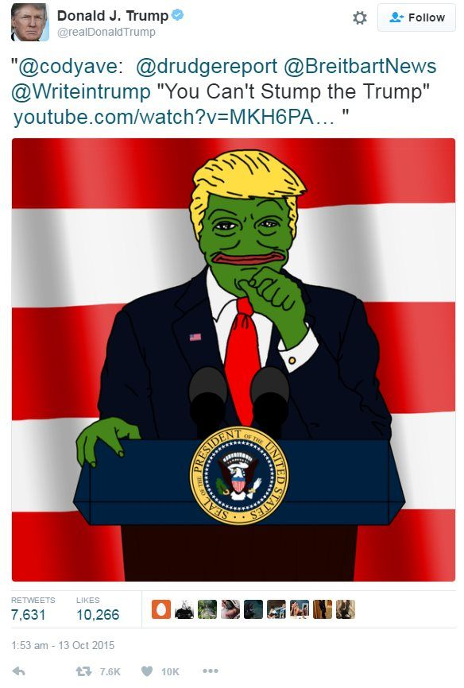
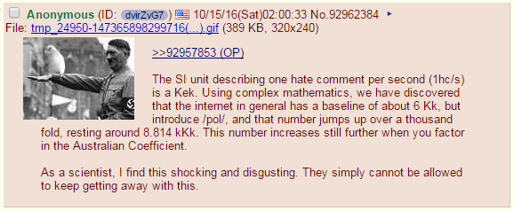

Outlier: a fact, figure, piece of data, etc. that is very different from all the others in a set and does not seem to fit the same pattern. (Cambridge dictionary)
A Longitudinal Measurement Study of 4chan’s Politically Incorrect Forum and its Effects on the Web
President Donald Trump tweeting a caricature of himself in the appearance of Pepe the Frog
I will not go into the details of the topic. There are already several articles and blogs. See for example this one from one of the co-authors, Prof. Emiliano De Cristofaro. I will say a few words from my perspective.
It was the summer of 2016, during my first year of my Ph.D. My lab was involved in the European-funded project Encase (Enhancing Security and Privacy in the Social Web). In this context, I had an internship at Telefonica (Barcelona). Prof. Jeremy Blackburn was coordinating a team to study 4chan /pol/. Short for "Politically Incorrect", /pol/ is an anonymous and ephemeral political discussion imageboard on 4chan. The key words are anonymity and ephemerality. Users can interact with the board without having an account, or they may have an intra-thread pseudo-ID. By ephemeral, it means that each post published on 4chan has a lifetime (depending on the thread's popularity), after which it will be permanently deleted. These two characteristics are the perfect ingredients for toxic, racist, and hateful content. Besides being a niche community, it has quite an impact in the real world. In 2016, there were the US elections that Donald Trump happened to win. At the time, the president tweeted a caricature of himself with the appearance of Pepe the Frog (Mascotte of 4chan), winking the eye to the far-right community that populates /pol/.
Being catapulted into this world was quite challenging for me. I did not know anything about natural language analysis and didn't know where to start. Prof. Gianluca Stringhini gave me a great tip, suggesting me to analyse timestamps since I could see them as signals. And that is what I did. We had timestamps of 4chan posts of threads linking to a YouTube video and the timestamps of each comment to the video. I treated each time stamp as a Delta Dirac pulse. Then, I did what any signal processing guy would do as a starting point: a cross-correlation. I correlated the synchronisation lag between 4chan and YouTube activities to the level of hatefulness that characterised the comments of the specific video, and "bam!" we had the first quantitative evidence of 4chan "raids" on targeted YouTube videos. These types of attacks were known. Someone on 4chan would post a link to a YouTube video on /pol/ with the capture "You Know What To Do". Anyone reading the call-to-arms would go to the link and spread hate on it.
An example of /pol/ 4chan post making fun of my hate-comments-per-second metric
The sync-lag vs. hate-comments-per-second figure assured me the first position in the list of authors of the paper. The paper was highly successful, as you can tell from all the articles linked above. But the most exciting part was the reaction from the /pol/ community. Some were amused and proud we were studying them. Some conspiracists spread the idea that the United Nations funded the study to fight them. And then they did what they were good at. They targeted us. They insulted and threatened us on all the public channels. Some of the stuff was fun, some not at all. But it was definitely an experience having your data revolting against you.
I have never continued on this track, but you can find many more articles from the co-authors.
Business Card
.
Get in touch
Choose the proper address, depending on the topic.

{kind=link}
{kind=link}